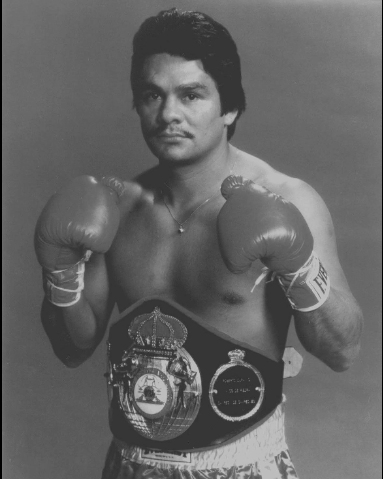
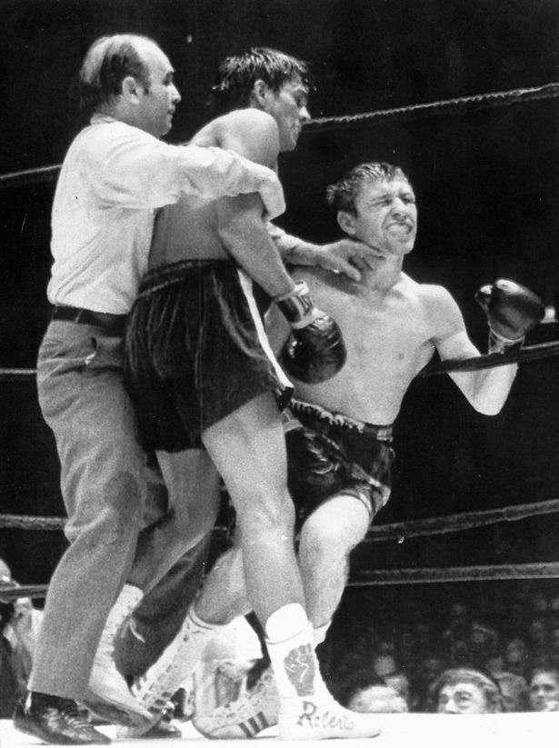
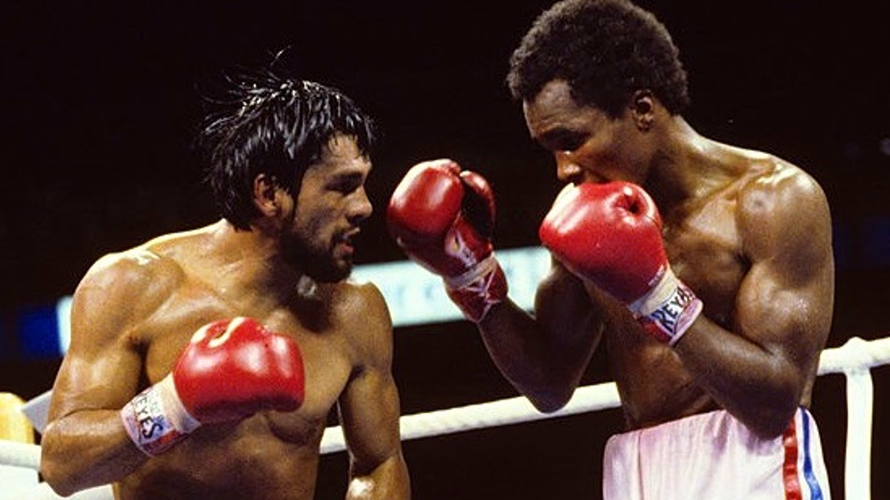

Roberto Durán, born in 1951 in Panama City, Panama, began his professional boxing career in 1968 at just 16 years old. Known for his ferocity in the ring and nickname "Manos de Piedra" (Hands of Stone), Durán’s style was aggressive, powerful, and relentless. His debut marked the start of a career that would cement his place as one of the sport’s greatest fighters.
One of Durán’s most famous fights came in 1972 against Scotland’s Ken Buchanan. Durán defeated Buchanan to win the WBA Lightweight title in a dominant performance. This fight was a major milestone in his rise to boxing superstardom.
In 1980, Durán faced Sugar Ray Leonard in a fight for the WBC Welterweight title. Durán’s aggressive style overwhelmed Leonard, and he won in a unanimous decision, becoming the first man to defeat Leonard in his career. This fight is regarded as one of the best of the 1980s.
Durán’s career was filled with accomplishments, including winning world championships in four different weight classes and being widely considered one of the greatest lightweight boxers of all time. His determination, grit, and unique boxing style made him a global legend in the sport.
One of the most significant struggles Roberto Durán faced was his infamous "No Más" moment during his rematch with Sugar Ray Leonard in 1980. The fight ended unexpectedly when Durán quit in the eighth round, saying, "No más" ("No more"). This decision shocked the boxing world and tarnished his reputation, overshadowing his earlier accomplishments, including his dominance in the lightweight division and his victory over Leonard in their first bout. Off the ring, Durán also dealt with financial difficulties, personal controversies, and the challenge of maintaining discipline in his training, which often impacted his performances later in his career.